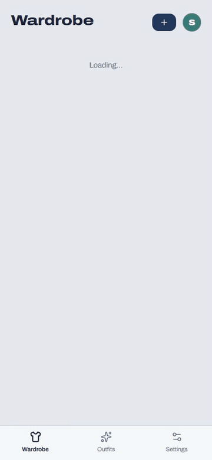
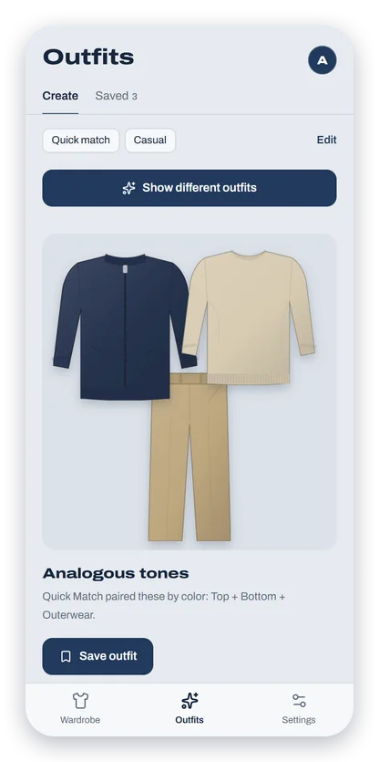
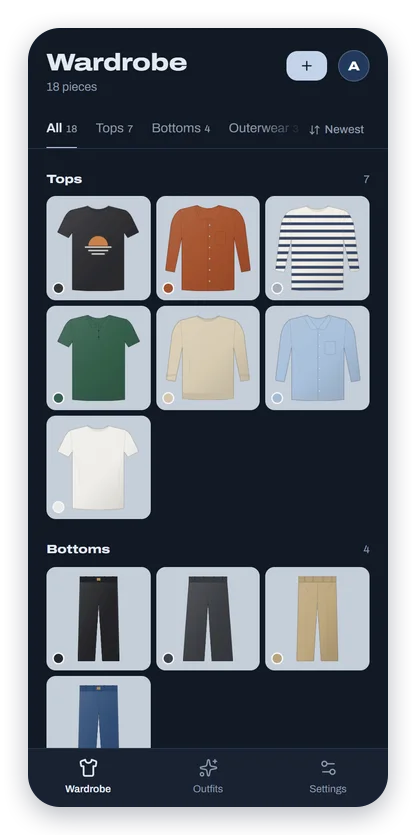
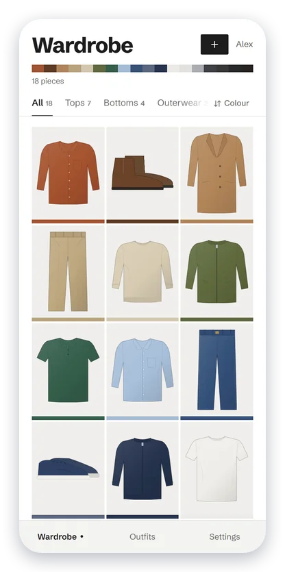
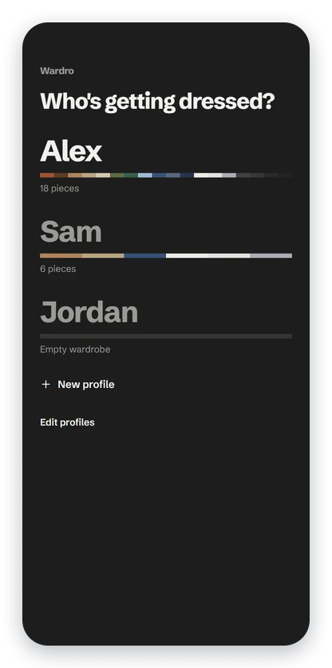

Stop wearing the same five things.
Wardro is a wardrobe app that runs on your own computer. Photograph your clothes once, and it cuts each piece out, reads its colours and puts outfits together for you.
Free and open source. Colour matching works offline with no API key; the AI stylist is optional and uses your own.

From photo to outfit in three steps
-
Snap a photo
Lay a piece flat or hang it up. Wardro removes the background on your own machine and files it under one or more categories.
-
It reads the colours
Up to three colours per piece, so a black shirt with a tan palm print stays black and tan instead of turning into muddy brown.
-
Get dressed
Ask for outfits by colour theory, or let an AI stylist plan around the occasion, the season and the weather.
Colour matching that knows real clothes
Quick Match is free and works offline. Choose how an outfit should come together. Its thresholds are tuned on real garment photos, which are far duller than paint swatches.
-
Classic
The original colour-harmony match.
-
Tonal
Shades of one colour, like red into burgundy.
-
Analogous
Neighbouring colours that flow together.
-
Complementary
Opposites that balance, like olive against navy.
-
Neutral + accent
Quiet neutrals with one piece that carries the colour.
-
Wada palettes
Whole outfits matched to a classic colour dictionary.
A stylist for the day, and for the trip
AI Stylist
Pick an occasion and it sends your clothes to Claude, Anthropic's AI model, along with the season and the weather. A few outfits come back, each with a short reason why it works.
It remembers what it has shown each person, so it never suggests the same outfit twice, or one you already saved.
- Casual
- Smart casual
- Work
- Interview
- Formal
- Evening
- Date night
- Party
- Wedding guest
- Active
- Travel
- Beach
- Lounge
Packing
Pick your dates and a destination. Within the 16-day forecast, Wardro plans around the real weather. Further out, it uses what those exact dates were like over the last ten years.
Ask for fewer outfits than days, and it plans pieces you can re-wear, then tells you exactly what to pack.
- Now
- 23°, partly cloudy
- During trip
- ~24° (21–28°), typical for these dates
Pack 11 pieces4 outfits for 6 days, some worn more than once
Two looks, light and dark
Everyone in the house picks their own: crisp Tailor's navy, or Colour story, which lets your clothes set the palette.




Your clothes stay home
- Runs on your computer
- Three Docker containers: the app, a database and the background remover. Your photos sit on your own disk.
- Reach it from anywhere, privately
- Over Tailscale from any browser, the Android app, or your iPhone's home screen, where it opens full-screen like an app.
- A wardrobe for everyone in the house
- Tap your name to start. Each person gets their own clothes, saved outfits and look.
- Online only when you ask
- Photos go to Claude only when you use the AI features. Weather lookups send a place name to Open-Meteo.
Running in three commands
You'll need Docker. An Anthropic API key is only needed for the AI Stylist and Packing.
-
Download it
git clone https://github.com/SarveshP16/Wardro-app.git cd Wardro-app -
Create the settings file
cp .env.example .env -
Start it, then open localhost:3000
docker compose up --build -d
Profiles have no passwords by design, so keep Wardro on your home network or a private one like Tailscale. The README covers the Android app, iPhone setup and upgrades.